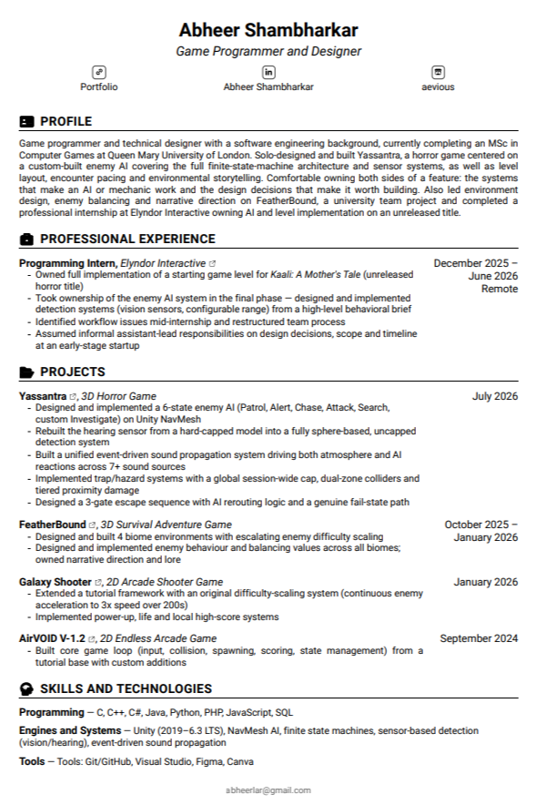

Resume

Curriculum Vitae

Biography
I'm Abheer Shambharkar — Aevious or Ari, in the virtual world. I'm a Game Designer & Programmer currently completing my MSc in Computer Games at Queen Mary University of London, backed by a B.Tech in Computer Science & Engineering and a background in software engineering and web development. That background wasn't wasted, it's why I approach game development from both a creative and an engineering angle, treating design decisions and system architecture as the same problem. My second semester introduced me to AI agent behaviour and procedural content generation and that shifted everything. My current focus sits between AI programming and technical game design, building intelligent systems and the structures that let designers push against them, with gameplay programming and narrative/systems design filling out the rest. That focus got tested during my internship at Elyndor Interactive, where I joined as a programming intern on their unreleased horror title, Kaali: A Mother's Tale, and ended up leading enemy AI development and restructuring the team's workflow. It's also the throughline of Yassantra, my third-person horror project built to showcase a custom enemy AI system. Both projects feed into the Game Alphabet Development series. I believe games are the strongest storytelling medium there is, because players experience the world instead of watching it. That's the work I want to keep making. The journey's still ongoing.
Alongside my coursework, I run a long-time personal challenge called Game Alphabet Development(GAD) series — a series of 26 games, one for every letter of the alphabet, built out of order and driven by whatever skill, genre or technology I want to wrestle with next. Four entries in so far: AirVOID (arcade fundamentals), Galaxy Shooter (gameplay systems), FeatherBound (large-scale survival) and Yassantra (AI-driven horror). Less about finishing the list, more about staying uncomfortable on purpose and learn new new exciting stuff.
Where I Focus
I split my focus evenly across two tracks: programming and design.
Programming — from strongest interest to next: AI Programmer, Gameplay Systems Programmer, Gameplay Programmer.
Design — from strongest interest to next: Technical Game Designer, AI Designer, Gameplay Designer, Systems Designer, Narrative Designer, Lore Designer.
Technical Skills
Game Development
- Unity Engine (C#)
- Game Design & Mechanics
- AI Agent Behaviour
- Procedural Content Generation
Programming Languages
- C, C++, C#, Java, Python, JavaScript, PHP, SQL
Web Development
- HTML5, CSS, Bootstrap 5
- XAMPP (Local Backend Development)
Tools
- Version Control: GitHub
- Graphic Design: Canva, Figma, PicsArt
Office Suite
- Word, PowerPoint, Excel, Outlook, To Do
Soft Skills
- Communication & Public Speaking
- Leadership & Team Coordination
- Critical Thinking & Problem Solving
- Adaptability & Open-mindedness
- Time Management & Organisation
- Attention to Detail
- Independent & Team Working
- Professional & Positive Attitude
Other Skills
- Karate Practitioner (3rd Kyu)
- Swimmer (10+ years experience)
- Badminton Player (2+ years)
Interests
- Animation & 3D Art
- Writing
- Astronomy & Cosmos
- Philosophy & Human Psychology
- Languages
- Intellectual Exploration
Hobbies
- Researching & Brainstorming
- Video Games
- Anime & Movies
- Web Series
Education
- MSc in Computer Games — Queen Mary University of London (Sept 2025 – Sept 2026)
- B.Tech in Computer Science and Engineering — Rashtrasant Tukadoji Maharaj Nagpur University (July 2020 – Dec 2024)
- Higher Secondary Education (IT) — St. Paul Junior College (Apr 2018 – Apr 2020)